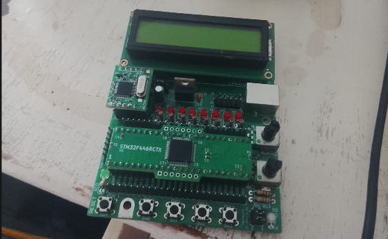
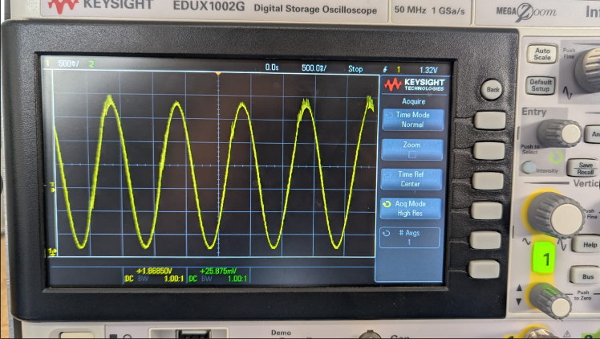
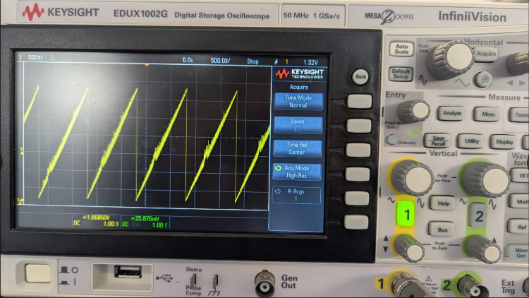
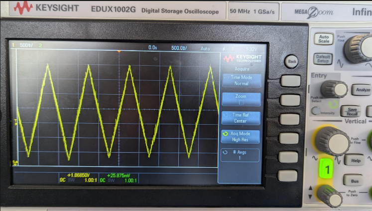
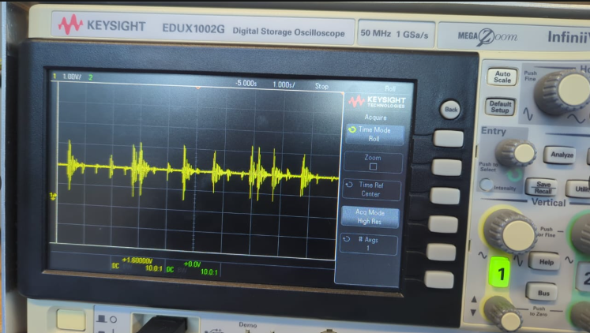
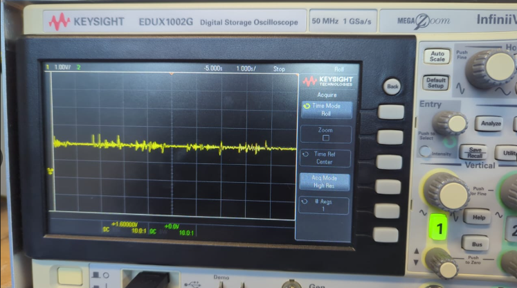
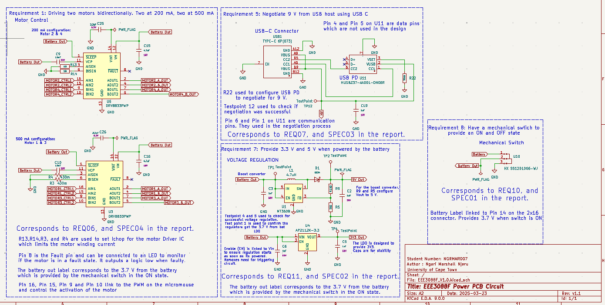
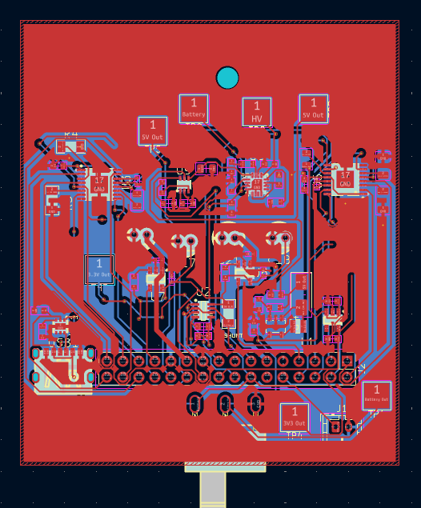
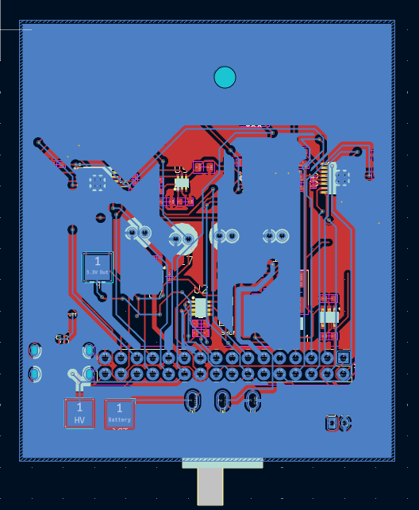
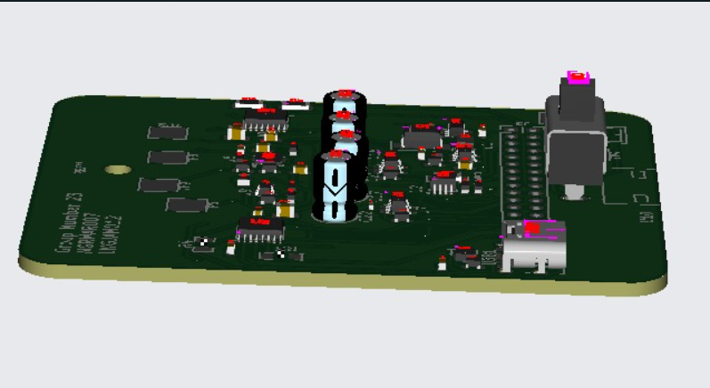

STM32F4 Audio Wave Project
This project involved sampling different signals, creating lookup tables, and programming an STM32F4 microcontroller to recall the respective waveforms.
The generated waveform was represented using a flashing LED on the development board and could also be observed as a waveform when the board was connected to an oscilloscope.






Water Level Sensor
This project involved designing and simulating a water level sensor using logic gate chips on a breadboard. The system was designed as a smart alarm that would trigger a sequence of LEDs and buzzers depending on the water level in a tank.
Resistors were used to simulate different water levels during the prototype stage. In a practical implementation, a pressure transducer would be used to measure the actual water level.
KiCad & PCB Design



